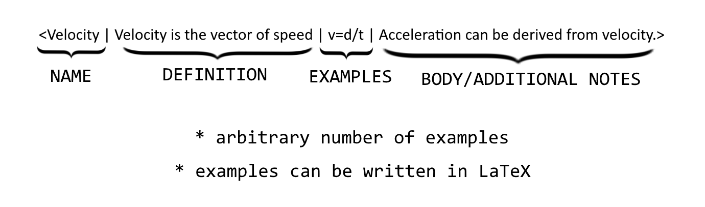

context is a useful and smart tool for taking notes. This web application allows you to easily separate your notes into distinct sections and navigate or view terms that have previously been defined. Additionally, context does a good job at organizing notes into definition, examples, and any other notes related to a topic.
tldr; the "formula" for defining sections and creating sections is as follows:
The first paramter is the name of the section, the second is the definition, followed by an arbitrary number of examples, and finally with a body paragraph at the end.
To create a section in, simply use angle brackets like so:
< >
Everything within these brackets will be grouped into one section. The first word following the opening angle bracket is what the section will be defined as and must be followed with a "|" symbol. For example, we are physics class and want to create a section for notes relating to velocity. We would do this by typing:
<velocity|>
class="instruction"Next comes the definition of the word you just defined. After the |, simply add your definition and end the sentence with a |. Following the previous example, it would look like this:
<velocity|Velocity is a measure of how fast something moves in a particular direction.|
Note: When you reference a defined word, it is not case sensitive!After that, you can add as many examples as you want to support your definition. For example:
<velocity|Velocity is a measure of how fast something moves in a particular direction.| If a runner travels 100 meters in 10 seconds, his velocity would then be 100m/10s=10m/s.| In 5 seconds, a bird travels 20m. The bird's velocity is 20m/5s=4m/s.|>
Remember to add the | after each example!The last sentence that you add after the |, automatically becomes the body paragraph so make sure to sandwich your examples between the definition and the body paragraphs.
<velocity|Velocity is a measure of how fast something moves in a particular direction.| If a runner travels 100 meters in 10 seconds, his velocity would then be 100m/10s=10m/s.| In 5 seconds, a bird travels 20m. The bird's velocity is 20m/5s=4m/s.| Velocity is important to our study of kinematics. From velocity we can also learn about information such as acceleration or displacement>